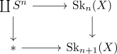

relevant topo 1 claims about singular homology
some thoughts
- functor
- homotopy invariant
- homology of a point
- homology of coproducts
- homology of spheres
- LES of reduced homology:
- identify mapping cone with reduced homology
- mayer-vietoris
- excision
- suspension isomorphism
- how to compute algorithmically the homology of cw complexes:
- n-skeleton has trivial homology for $d > n$ (e.g. induct + LES)
write

Then use LES and use
\begin{displaymath}
\begin{tikzcd}
\mathrm{Sk}_n \dar & * \\
\mathrm{Sk}_{n+1} & \vee_{ S^{n+1}
\end{tikzcd}
\end{displaymath}to identify $\tilde{H}_{n}(\mathrm{Sk}_{n}(X))$